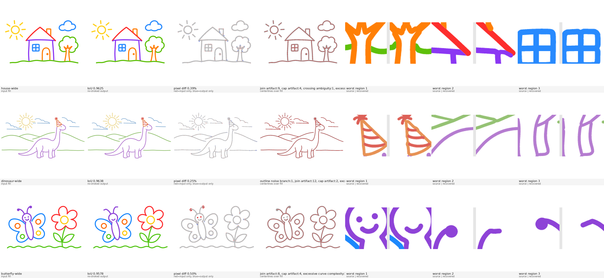

| house-wide | IoU 0.9625 | sym 3.89% | diff 0.39% | join artifact:9, cap artifact:4, crossing ambiguity:1, excessive curve complexity:22 |
|---|---|---|---|---|
| dinosaur-wide | IoU 0.9638 | sym 3.73% | diff 0.25% | outline noise branch:1, join artifact:12, cap artifact:2, excessive curve complexity:17 |
| butterfly-wide | IoU 0.9578 | sym 4.27% | diff 0.50% | join artifact:8, cap artifact:4, excessive curve complexity:18 |
